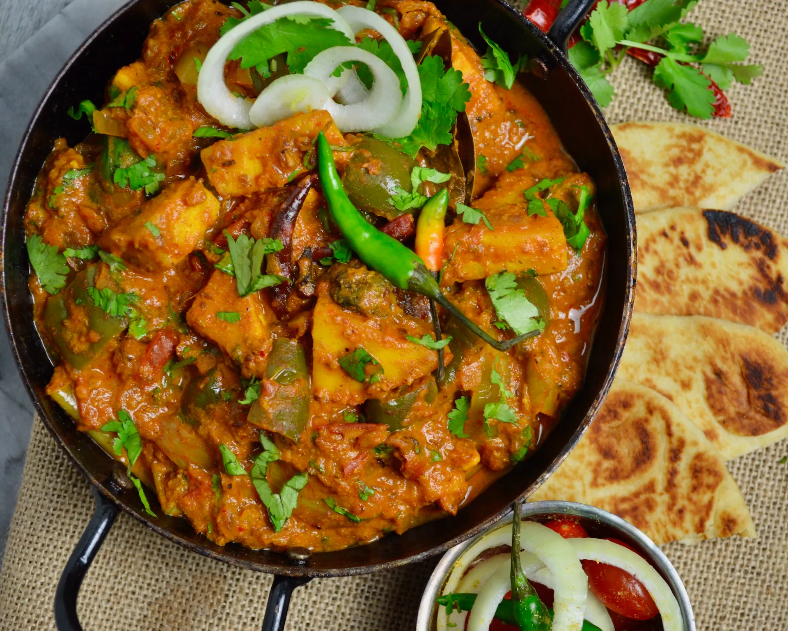

Kadai Paneer Recipe is a delicious dish which best goes with indian breads such as Naans,Kulchas,Rotis and it also tastes good with fried rice.This dish is mainly popular in north states of India and is very commonly made recipie.It is spicier than most other Paneer recipes and tastes very good.Here is a detailed recipe with step-by-step process.
| Preparation Instructions | 880 calories | |
|---|---|---|
| Prep Time: | 15 mins | |
| Cook Time: | 45 mins | |
| Total Time: | 1 hrs | |
| Servings: | 6 | |
Heat oil and add crushed Coriander Seeds, Cumin Seeds, Fennel Seeds, Red Mirchi and roast and Add the chopped Onions and fry till the onions turn golden. Then add Ginger, Garlic Paste and mix.Add the big pieces of Onion and Capsicum pieces and cook until the onions turn soft and Add Salt, Mirchi Powder, Garam Masala, Coriander Powder, Roasted Cumin Seeds and 1 tbsp Water and fry well.Add Tomato Puree and fry till the Oil separates and cover and cook on medium flame.Then add the Tomato pieces, mix and let the Tomato pieces cook well. The Tomato pieces should stay as pieces.After the Tomato pieces are cooked, add 150 ml hot Water and Paneer pieces. Cover and cook for 5 minutes. Add Ghee and remove it from the fire.